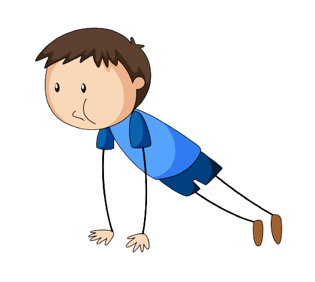
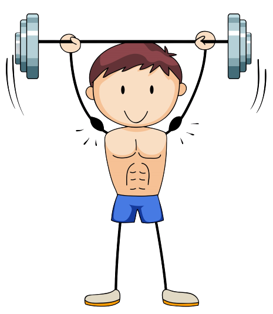

Bem-vindo ao Blog que aconselhará as pessoas que precisam de um UP na sua vida fitness
Nesse site você encontrará diversos tipos de treinos excelentes para o seu devido interesse. Trabalharemos com treinos de Calistenia, treinos cardiovasculares, treinos de musculação e treinos de artes marciais. Fique ligado na página "Planos de treinos" e se cadastre no site na página "Acesso" e não perca as novidades e dicas para melhorar sua vida fitness. Um exemplo em vídeo do tipo de treinos que terá nesse site se estende abaixo em um Treino Tábata para melhoria de cardio e condicionamento físico.
Nesse site você poderá treinar com exercícios que usa apenas seu peso corporal
Nesse site você poderá treinar com exercícios com progressão de pesos em maquinas
Nesse site você poderá treinar sua mobilidade e flexibilidade